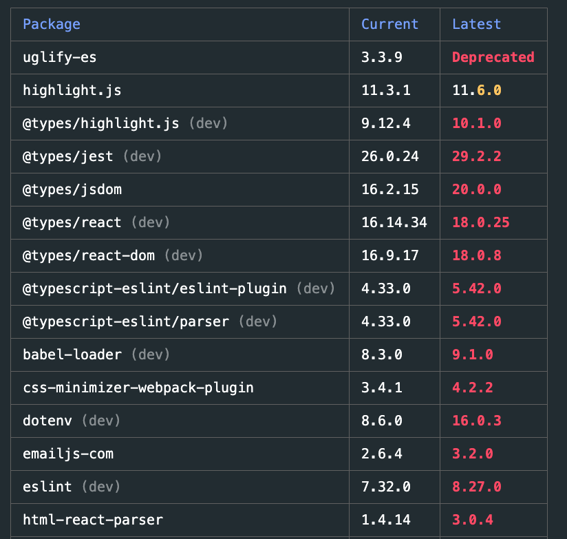
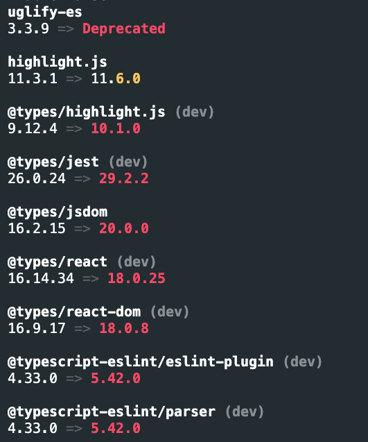

目次
TL;DRpnpm とはpnpm outdated コマンドについてpnpm outdated コマンドに JSON 形式の出力をサポートしたかったモチベーションformat オプションについてJSON 形式の出力例pnpm outdated コマンドが JSON format をサポートした
TL;DR
- pnpm outdated コマンドが JSON 形式の出力をサポートした
- これでプロジェクト中の依存パッケージの自動アップデートなどがやりやすくなる
- 実装を担当していたので, 実装や変化, ユースケースをブログに示す
pnpm とは
pnpm とは Node.js 環境におけるパッケージマネージャーの一つです. パッケージマネージャーとして, 他のツールだと npm や yarn が挙げられます.
pnpm は symlink を用いて, npm モジュールの高速で省容量なダウンロードを提供しています. 通常あるプロジェクトで npm モジュールをインストールすると, node_modules 以下にそれらのモジュール, とさらにネストされた依存モジュール群が全て展開されます. pnpm はプロジェクトを跨いで, それらのモジュールを単一のディスク領域へと保存し, プロジェクト配下にはそれへのハードリンクが展開されるようになります. また, 異なるバージョンのモジュールに依存している際, それら一つ一つを丸々 install するのではなく, それらのモジュールごとの更新の差分のみを保存します. これらの方法により省容量で高速なモジュールのインストールを実現しています.
また, pnpm の特徴として大胆に他のパッケージマネージャーにはない utility コマンドやオプションを追加して行っている, といったことも挙げられます.
pnpm のメンバーとして, pnpm outdated コマンドに JSON 形式での出力機能を実装したので, それについてブログに書き起こそうと思います.
pnpm outdated コマンドについて
pnpm outdated コマンドは, プロジェクト中の依存モジュールのうち, deprecate されていたり新しいバージョンが publish されているなどで, 古くなったモジュールを洗い出すためのコマンドです.
例えばこのブログで pnpm outdated を実行すると以下のような出力が得られます.

また list 形式での出力もサポートしており, pnpm outdated --table false と実行すると以下のような出力が得られます.

pnpm outdated コマンドに JSON 形式の出力をサポートしたかったモチベーション
モチベーションとしては, 上記のような table 形式, list 形式での出力だとパッケージのアップデートを自動化したい, となったときにそれら形式はヒューマンフレンドリーに偏っており, 逆に自動化しにくい, といった背景がありました. 自動化しやすいように, 出力フォーマットとして JSON 形式をサポートすることになりました.
format オプションについて
JSON 形式の出力のサポートのために, --format が追加されました. 一方これは --table {boolean} と責務が微妙に被ってしまいます. また --table は boolean 値を取るため, 命名的にも機能的にも --table で JSON 形式での出力を指定できるようにすべきではありません. また責務も被るため, その解消として --format {table | list | json} と取れるようにし, --table は削除されました. (実装
JSON 形式の出力例
pnpm outdated --format json を実行します.
{
"uglify-es": {
"current": "3.3.9",
"latest": "3.3.9",
"wanted": "3.3.9",
"isDeprecated": true,
"dependencyType": "dependencies"
},
"highlight.js": {
"current": "11.3.1",
"latest": "11.6.0",
"wanted": "11.3.1",
"isDeprecated": false,
"dependencyType": "dependencies"
},
"@types/highlight.js": {
"current": "9.12.4",
"latest": "10.1.0",
"wanted": "9.12.4",
"isDeprecated": true,
"dependencyType": "devDependencies"
},
...
自動化しやすそうでハッピーですね. 2022/11/06 時点ではまだリリースされていませんが, 次の minor release で出ると思うので待ち遠しいです.